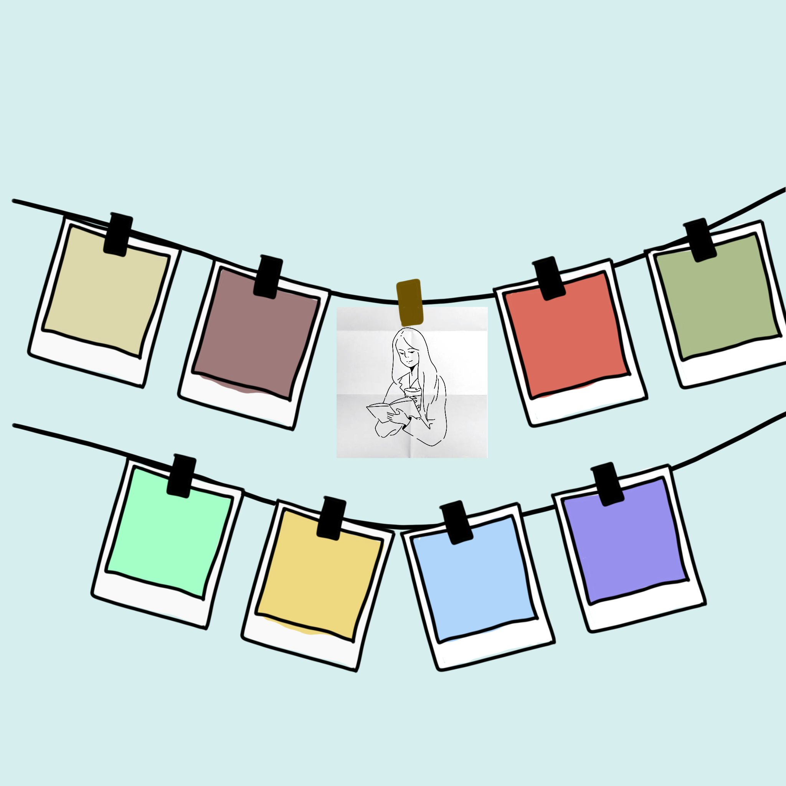

You see the portrait everytime you look up, wondering where he is, and what he might be doing at the moment.
You start analyzing the strokes he takes. There are certain parts that look like he stops and hesitates, and there are some more smooth, natural strokes that flows beautifully. You are not an artist, but you enjoy imagining how he made the sketch. You feel a sense of communication between you two.